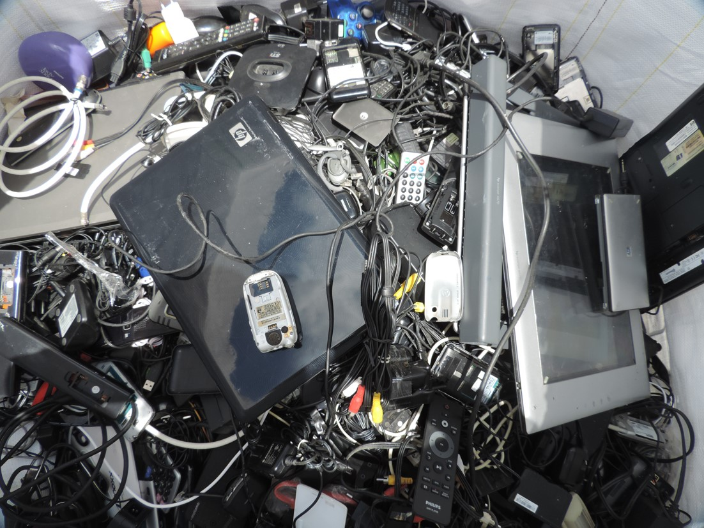

O avanço tecnológico, marcado pela rápida obsolescência de dispositivos eletrônicos, trouxe consigo uma preocupação significativa: o lixo eletrônico. Este fenômeno não apenas representa uma ameaça ao meio ambiente, mas também desencadeia impactos sociais substanciais. À medida que a sociedade descarta crescentes quantidades de dispositivos eletrônicos, os impactos sociais se manifestam de várias maneiras. Um dos principais desafios é a desigualdade digital. Comunidades carentes ou países sem infraestrutura adequada para gerenciar resíduos eletrônicos ficam à margem do acesso à tecnologia mais recente, ampliando assim as divisões sociais e econômicas.
Além disso, a manipulação inadequada do lixo eletrônico pode levar a riscos à saúde pública. Com o objetivo de recuperar materiais valiosos como cobre e ouro, trabalhadores correm o risco de exposição a mais de mil substâncias nocivas, incluindo chumbo, mercúrio, níquel, retardantes de chamas bromados e hidrocarbonetos policíclicos aromáticos (HPA).
Outra classe que vem chamando atenção são as mulheres, que trabalham em locais expostos a esses metais pesados. Cerca de 12,9 milhões de mulheres estão trabalhando no setor informal de resíduos, o que potencialmente as expõe ao lixo eletrônico tóxico e as coloca em risco, junto com seus filhos. Para uma futura mãe, a exposição ao lixo eletrônico tóxico pode afetar a saúde e o desenvolvimento de seu feto para o resto da vida. Os potenciais efeitos adversos à saúde incluem natimortos e prematuros, bem como baixo peso e estatura ao nascer.  A exposição ao chumbo em atividades de reciclagem do lixo eletrônico tem sido associada a pontuações de avaliação neurológica comportamental neonatal significativamente reduzidas, aumento das taxas de transtorno de déficit de atenção/hiperatividade (TDAH), problemas comportamentais, mudanças no temperamento infantil, dificuldades de integração sensorial, redução dos escores cognitivos e linguísticos. Outros impactos adversos à saúde infantil associados ao lixo eletrônico incluem alterações na função pulmonar, efeitos respiratórios, danos ao DNA, prejuízos à função da tireoide e aumento do risco de algumas doenças crônicas tardias, como câncer e doenças cardiovasculares.
"Uma ação eficaz e vinculativa é urgentemente necessária para proteger milhões de crianças, adolescentes e mulheres grávidas em todo o mundo cuja saúde é ameaçada pelo processamento informal de dispositivos elétricos ou eletrônicos descartados", revela um novo e inovador relatório da Organização Mundial da Saúde (OMS): Children and Digital Dumpsites. 15 de junho de 2021.
Para abordar esses desafios, é crucial promover a reciclagem responsável de eletrônicos, implementar regulamentações eficazes e incentivar a conscientização. A educação ambiental e a mudança de mentalidade em relação ao descarte de dispositivos eletrônicos são essenciais para enfrentar os impactos sociais decorrentes do lixo eletrônico.
Quer saber mais? Continue no nosso site se informando sobre: